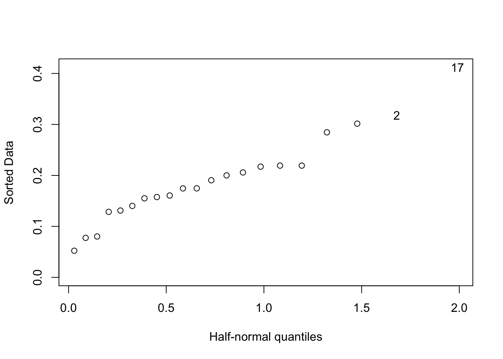
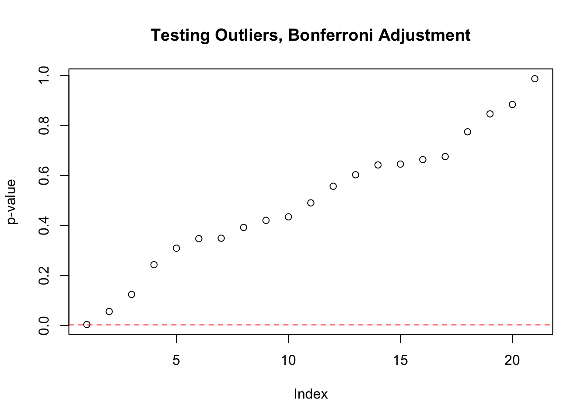

Here we will explore robust methods of regression and compare results to a regular regression analysis with diagnostics. The focus is on the question of how to best remedy outliers. The following is a snipet of the dataset being used.
| Air.Flow | Water.Temp | Acid.Conc. | stack.loss |
|---|---|---|---|
| 80 | 27 | 89 | 42 |
| 80 | 27 | 88 | 37 |
| 75 | 25 | 90 | 37 |
| 62 | 24 | 87 | 28 |
| 62 | 22 | 87 | 18 |
| 62 | 23 | 87 | 18 |
LS Model: Least squares
## lm(formula = stack.loss ~ Air.Flow + Water.Temp + Acid.Conc.)| Estimate | Std. Error | t value | Pr(>|t|) | |
|---|---|---|---|---|
| (Intercept) | -39.9196744 | 11.8959969 | -3.3557234 | 0.0037503 |
| Air.Flow | 0.7156402 | 0.1348582 | 5.3066130 | 0.0000580 |
| Water.Temp | 1.2952861 | 0.3680243 | 3.5195672 | 0.0026301 |
| Acid.Conc. | -0.1521225 | 0.1562940 | -0.9733098 | 0.3440461 |
LAD Model: Least absolute deviations
## rq(formula = stack.loss ~ Air.Flow + Water.Temp + Acid.Conc.)| coefficients | lower bd | upper bd | |
|---|---|---|---|
| (Intercept) | -39.6898551 | -41.6197317 | -29.6775352 |
| Air.Flow | 0.8318841 | 0.5127787 | 1.1411712 |
| Water.Temp | 0.5739130 | 0.3218235 | 1.4108981 |
| Acid.Conc. | -0.0608696 | -0.2134829 | -0.0289134 |
Huber Model: Huber’s robust regression
## rlm(formula = stack.loss ~ Air.Flow + Water.Temp + Acid.Conc.)| Value | Std. Error | t value | |
|---|---|---|---|
| (Intercept) | -41.0265311 | 9.8073472 | -4.1832445 |
| Air.Flow | 0.8293739 | 0.1111803 | 7.4597166 |
| Water.Temp | 0.9261082 | 0.3034081 | 3.0523516 |
| Acid.Conc. | -0.1278492 | 0.1288526 | -0.9922126 |
LTS Model: Least trimmed squares
## lqs.formula(formula = stack.loss ~ Air.Flow + Water.Temp + Acid.Conc.,
## method = "lts")| m4$coefficients | |
|---|---|
| (Intercept) | -34.14583 |
| Air.Flow | 0.75000 |
| Water.Temp | 0.25000 |
| Acid.Conc. | 0.00000 |
The inferences on the results are not directly comparable, but we can directly compare the estimated coefficients. First we note that the coefficient for Air.Flow as well as the intercept don’t change dramatically. We would also suspect that Air.Flow is statistically significant based on all the regressions where a t-statistic of a confidence bound is available . Coefficient for Water.Temp does shrink noticeably, however the sign, and thus the qualitative interpretation would not change. This variable also seems significant. The qualitative interpretation of Acid.Conc. also doesn’t change except for the LTS method where the variable is effectively ignored. All in all the results are quite similar in terms of the qualitative interpretation of the coefficients, and also comparable in quantitative effect on the outcome in some cases.
Now we can try to improve our LS model by preforming diagnostics and taking appropriate measures. We will focus on the analysis of extreme points since the goal of robust regression methods is to remedy the extreme points.
First we look if there are point with high leverage
halfnorm(lm.influence(m1)$hat)
cut = 2*(dim(stackloss)[2]+1)/dim(stackloss)[1]
sum(lm.influence(m1)$hat > cut)## [1] 0There appear to be some points with more leverage then others, like point 17, but no extreme values are observed. So, there don’t seem to be points with too high a leverage.
Next we test for outliers
p_val <- (1 - pt(abs(rstudent(m1)), nrow(stackloss) - ncol(stackloss - 1)))*2
plot(sort(p_val), ylab = "p-value", main = "Testing Outliers, Bonferroni Adjustment")
abline(h = 0.05/nrow(stackloss), col = 2, lty = 2)
sort(p_val)[1:2]## 21 4
## 0.003960491 0.055921682From the Bonferroni Adjusted test we see that point 21 would be considered an outlier. Bonferroni Adjustment is quite conservative however, so the second point could also be a suspect.
The next step would be to remove these two points (21,4) from the dataset and refit the LS model
dts <- stackloss[-c(4,21),]
m5 <- lm(stack.loss ~ Air.Flow + Water.Temp + Acid.Conc., data = dts)
tb <- as.data.frame(summary(m5)$coefficients)
summary(m5)$call## lm(formula = stack.loss ~ Air.Flow + Water.Temp + Acid.Conc.,
## data = dts)kable(tb)| Estimate | Std. Error | t value | Pr(>|t|) | |
|---|---|---|---|---|
| (Intercept) | -42.4530806 | 7.3845771 | -5.748884 | 0.0000385 |
| Air.Flow | 0.9566048 | 0.0944705 | 10.125966 | 0.0000000 |
| Water.Temp | 0.5555707 | 0.2640338 | 2.104165 | 0.0526410 |
| Acid.Conc. | -0.1087661 | 0.0967752 | -1.123904 | 0.2787191 |
Now when we compare the two LS models we see that the qualitative results are again the same. Now Water.Temp is less significant. The model without outliers however provides a better fit (\(R^2\) increased to 0.9693 from 0.9136) to the data. This is not necessarily good however. Furthermore if we look at the residual plots the problems of heteroskedastisity and possibly non-linearity remain, if not worsen. Without the outliers however the data does seem to follow the normal distribution more closely.